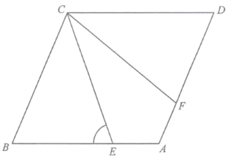

平面幾何 · 菱形與全等三角形

$$\angle CAE=\angle CAF=\frac{110^{\circ}}{2}=55^{\circ}$$
$$\therefore\ \triangle ACE\cong\triangle ACF\quad(\text{S.A.S.})$$
$$\angle ACE=\angle ACF=\frac{42^{\circ}}{2}=21^{\circ}$$
$$\angle AEC=180^{\circ}-55^{\circ}-21^{\circ}=104^{\circ}$$
$A$、$E$、$B$ 在同一直線上，故
$$\angle BEC=180^{\circ}-104^{\circ}=76^{\circ}$$